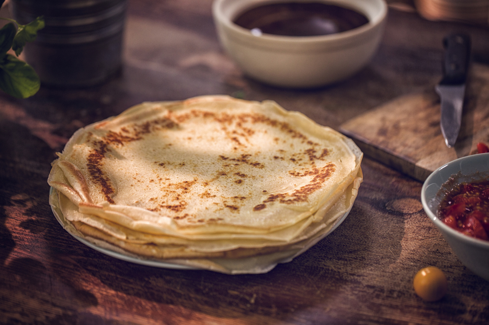

Hozzávalók
- 20 dkg finomliszt
- 4,5 dl tej
- 2 db L-es tojás
- 1 ek cukor
- 1 ek étolaj
- 1 nagy csipet só
- Olaj a sütéshez
 A tojásokat verjük fel egy nagyobb tálban. Szórjuk hozzá a lisztet, a cukrot, a sót és az olajat, majd dolgozzuk össze alaposan. Ezután fokozatosan adagoljuk hozzá a tejet is, miközben igyekezzünk szép simára keverni. A tésztát tegyük félre 15-20 percre pihenni, majd hevítsünk egy serpenyőben olajat, és süssük aranybarnára a palacsinták mindkét oldalát.